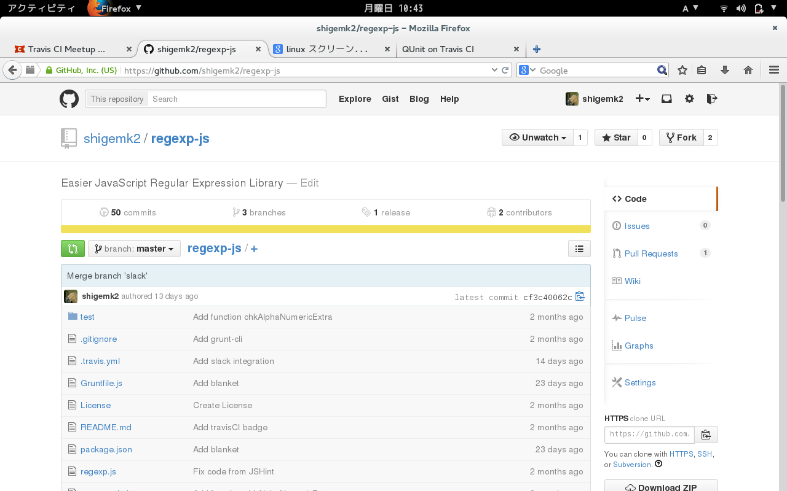
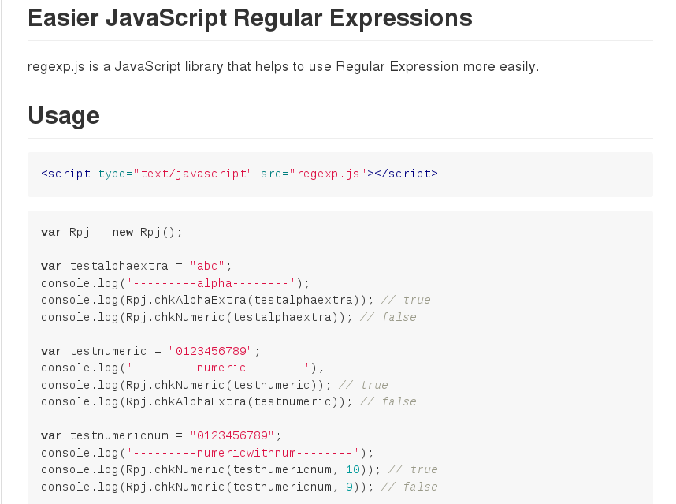
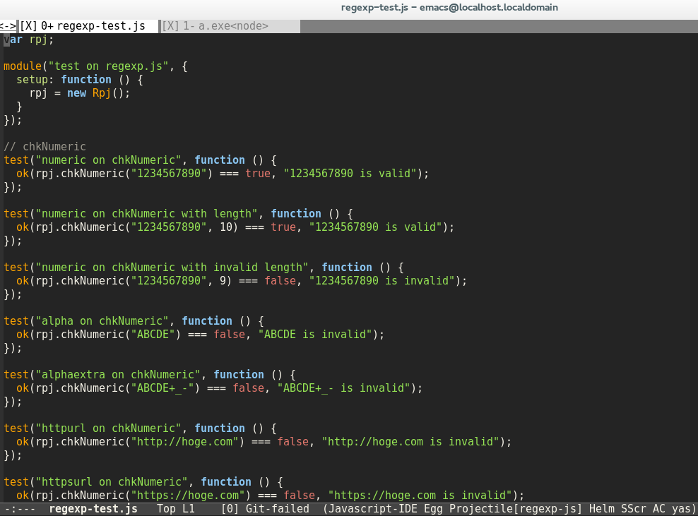
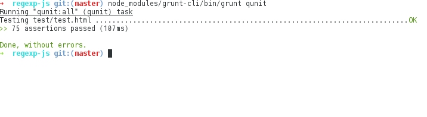
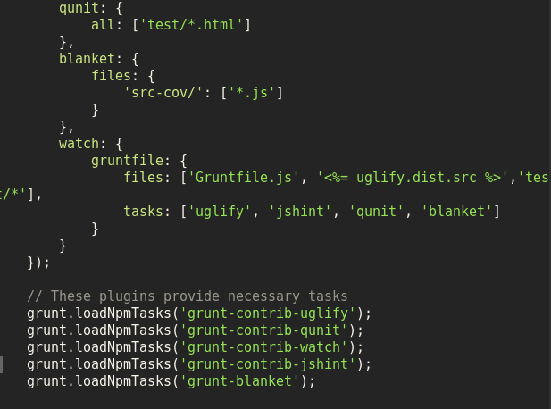
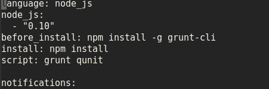
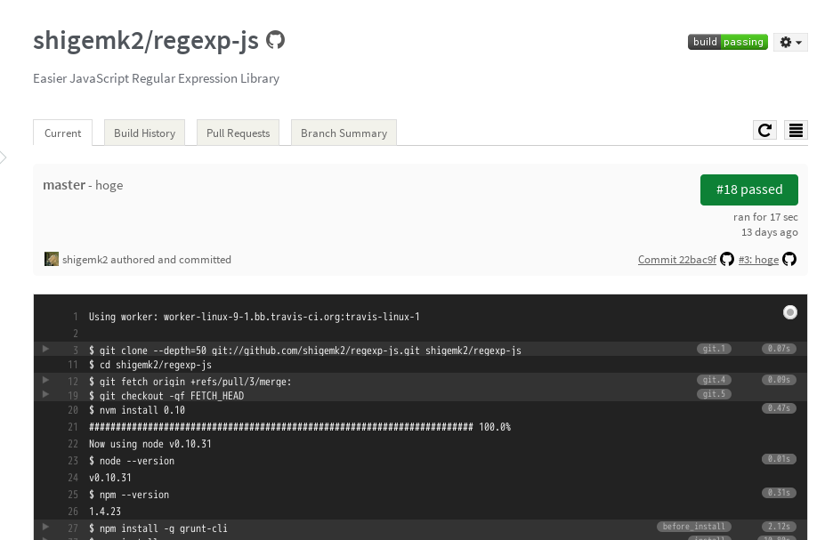
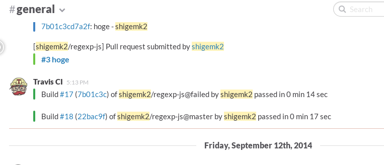

Your browser doesn't support the features required by impress.js, so you are presented with a simplified version of this presentation.
For the best experience please use the latest Chrome, Safari or Firefox browser.
QUnit on Travis CI @shigemk2

Twitter GitHubなどぜんぶshigemk2でやってます
自作JSライブラリをQUnitでテストしつつ、TravisCIで継続的インテグレーションしてみた
かんたんに正規表現を使えるライブラリ

https://github.com/shigemk2/regexp-js
使い方

テストコード

テストの実行

もちろんGruntと連携してます

travis.ymlを書いて…

pushすると…
デデーン

バッチをつけてます
Slackと連携してます

ひとりで…
一緒にSlackを使ってくれる人は募集…しません
ひとりで開発していてもこのくらいはできるのかもしれません
以上です